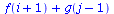

| > | read("FD.mpl"):MFD(): |
| Warning, grid_functions is not assigned |
| FD table updated, see the content using SFDT() command |
| > | grid_functions:={f,g}; |
| > | CtoD(f(x,y)+g(x,z)+x^2*y); |
| > | CtoD(f(x+hx)+g(y-hy)); |
|  |
| > | CtoD(f(t,x)+u(x,y)+r(g(x))); |
| > | CtoD(diff(f(x),x)); |
| Differential expression is not a valid continuous expression |
| Error, (in CtoD) Invalid continuous expression |
| > | CtoD(f(x) + j); |
| Invalid continuous expression, detected an index in:f(x)+j |
| Error, (in CtoD) Invalid continuous expression |
| > | CtoD(x(y)); |
| A function is named same as variable in x(y) |
| Error, (in CtoD) Invalid continuous expression |
| > |